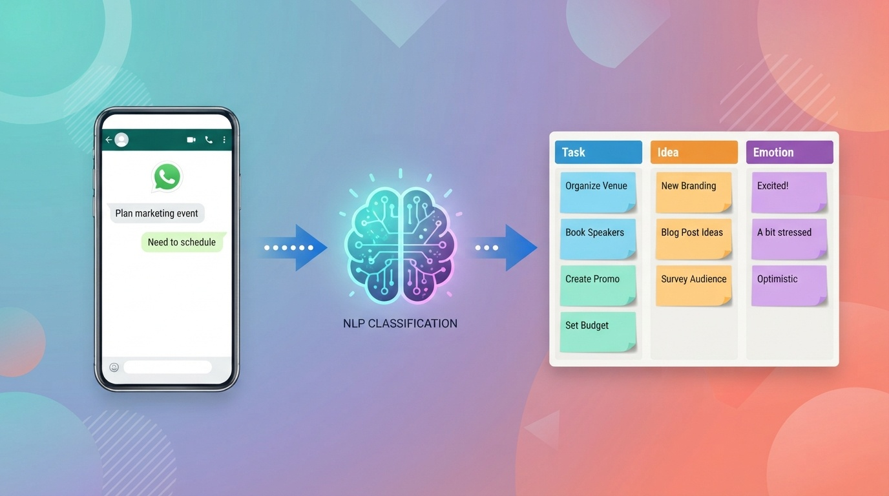

Dump your thoughts.
Let AI sort the mess into Notion.
Discover a smarter way to organize your ideas with The Brain Dump Sorter. This intuitive NLP‑powered tool instantly classifies your raw, unfiltered thoughts into clear categories — Tasks, Ideas, and Emotions — the moment you send them, so nothing you think ever gets lost again.

BRAINDUMPOne message in. A perfectly sorted note out.
The Brain Dump Sorter runs on a simple template: Prompt → Classify → Write to Notion. No apps to open, no folders to pick — just send your thought.
Send it on WhatsApp
Message the keyword BRAINDUMP followed by whatever's on your mind — a task, a spark of an idea, or just how you're feeling.
AI classifies it instantly
An NLP prompt reads your raw dump and sorts it into the right bucket — Task, Idea, or Emotion — in seconds.
It lands in Notion
Your classified note is written straight into your Notion workspace, tidy and ready — no copy‑pasting, no manual filing.
Every brain dump lands somewhere useful
Three clean categories keep your mental clutter from turning into digital clutter.
Task
"Call the dentist tomorrow" or "Finish the deck before Friday" — anything actionable gets flagged as a task, ready for your to‑do list.
Idea
That 2am spark of inspiration or a new project concept gets captured as an idea, so it's there when you're ready to build on it.
Emotion
Venting, reflecting, or just naming how you feel gets logged as an emotion — a lightweight journal you never have to format.
Just one keyword away
No app to download, no dashboard to learn. Open the WhatsApp thread you already have open all day, type your trigger word, and dump your brain.
Trigger keyword
Start any message with BRAINDUMP to activate the sorter.
Prompt‑based classification
A single template — Prompt → classify → write to Notion — does all the sorting work for you.
Straight into Notion
Every classified dump is written directly to your connected Notion database.
Lands in a board that's already organized
No setup required on your end — your Notion database fills itself in as you dump.
Good to know
How do I start using the Brain Dump Sorter?
Send a WhatsApp message starting with the trigger word BRAINDUMP, followed by whatever you want to capture. That's it — classification and syncing to Notion happen automatically.
What categories does it sort into?
Every dump is classified into one of three categories: Task, Idea, or Emotion — based on the intent behind what you wrote.
Do I need to set anything up in Notion?
Your classified notes are written directly to a connected Notion database using a simple Prompt → classify → write to Notion template, so there's minimal setup on your side.
Is there a demo available?
This page focuses on the WhatsApp flow itself — just send the trigger keyword and try it live, no separate demo needed.
Stop losing thoughts. Start sorting them.
Send BRAINDUMP on WhatsApp and let the AI turn your mental clutter into a clean Notion board.